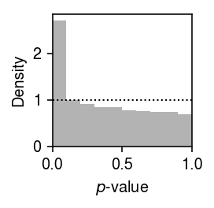
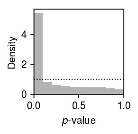
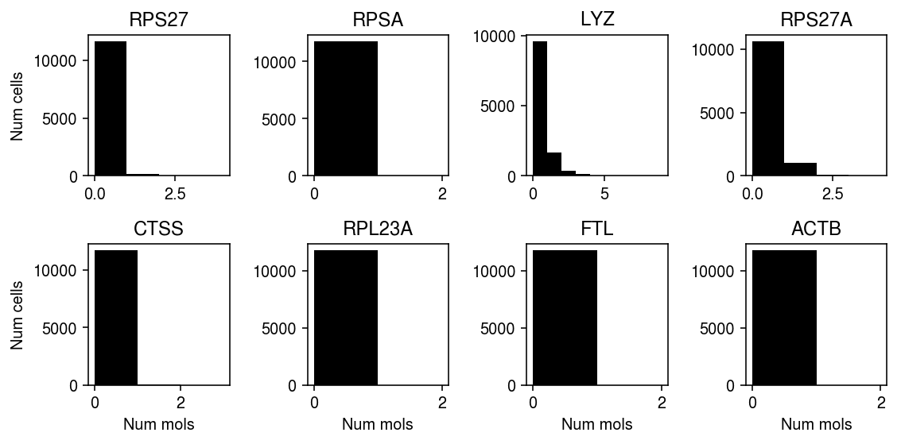
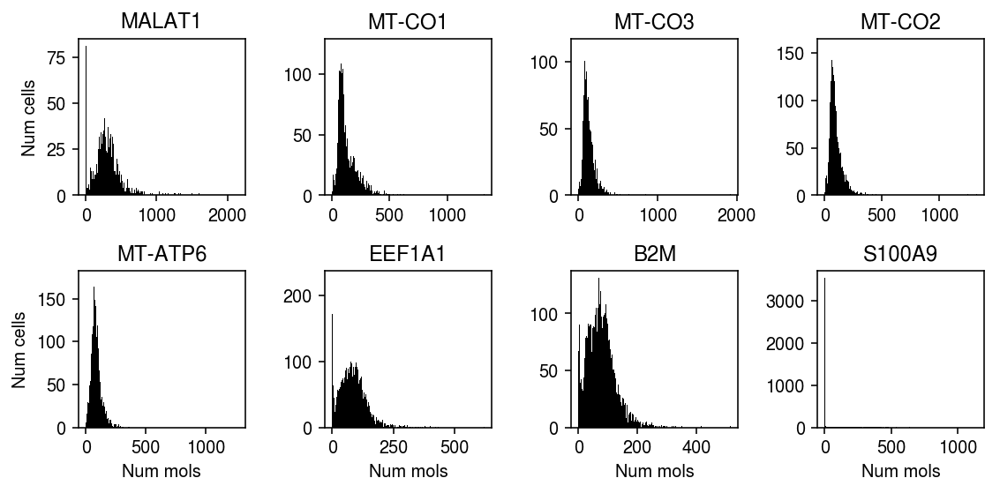

Expression variation in 10X v3 PBMC data
Table of Contents
Introduction
We previously found no evidence of multi-modal gene expression in scRNA-seq of 68K PBMCs and 540K immune cells. Florian Wagner suggested this could be because the noise introduced by the experiments was too high, and that a more sensitive experiment would reveal multi-modal patterns. As a specific example, he analyzed scRNA-seq of 10K PBMCs generated by the 10X platform, version 3. Here, we repeat our systematic analysis on this data set.
Setup
Submitted batch job 64851566
import anndata import numpy as np import pandas as pd import scanpy import scipy.io as si import scipy.sparse as ss import scmodes import scmodes.ebpm.sgd
%matplotlib inline %config InlineBackend.figure_formats = set(['retina'])
import matplotlib.pyplot as plt plt.rcParams['figure.facecolor'] = 'w' plt.rcParams['font.family'] = 'Nimbus Sans'
Data
Read the count matrix.
x = (si.mmread('/project2/mstephens/aksarkar/projects/singlecell-ideas/data/10xgenomics/pbmc_10k_v3/filtered_feature_bc_matrix/matrix.mtx.gz') .tocsr())
x.shape
(33538, 11769)
Read the metadata.
barcodes = pd.read_csv('/project2/mstephens/aksarkar/projects/singlecell-ideas/data/10xgenomics/pbmc_10k_v3/filtered_feature_bc_matrix/barcodes.tsv.gz', header=None, sep='\t') barcodes.columns = ['barcode'] genes = pd.read_csv('/project2/mstephens/aksarkar/projects/singlecell-ideas/data/10xgenomics/pbmc_10k_v3/filtered_feature_bc_matrix/features.tsv.gz', header=None, sep='\t') genes.columns = ['ensg', 'name', 'type']
data = anndata.AnnData(x.T, obs=barcodes, var=genes)
Keep genes with a non-zero observation in at least 1 cell.
scanpy.pp.filter_genes(data, min_cells=1)
data.shape
(11769, 23036)
Write out the filtered data.
data.write('/scratch/midway2/aksarkar/modes/10k_pbmc_v3.h5ad')
Read the filtered data.
data = anndata.read_h5ad('/scratch/midway2/aksarkar/modes/10k_pbmc_v3.h5ad')
Results
Gamma assumption
Fit a Gamma distribution to expression variation at each gene.
gamma_res = scmodes.ebpm.sgd.ebpm_gamma(data.X, batch_size=128, lr=5e-2, max_epochs=40, verbose=True) gamma_res = pd.DataFrame(np.vstack(gamma_res[:-1]).T, columns=['log_mu', 'neg_log_phi'])
Write out the results.
gamma_res.to_csv('/scratch/midway2/aksarkar/modes/10k_pbmc_v3-gamma.txt.gz', sep='\t')
Test GOF at each gene.
s = data.X.sum(axis=1).A.ravel() gamma_gof = [] for j, (gene, (log_mu, neg_log_phi)) in enumerate(gamma_res.iterrows()): d, p = scmodes.benchmark.gof._gof( x=data.X[:,j].A.ravel(), cdf=scmodes.benchmark.gof._zig_cdf, pmf=scmodes.benchmark.gof._zig_pmf, size=s, log_mu=log_mu, log_phi=-neg_log_phi) gamma_gof.append([gene, d, p]) gamma_gof = pd.DataFrame(gamma_gof, columns=['gene', 'stat', 'p'])
Write the GOF results.
gamma_gof.to_csv('/project2/mstephens/aksarkar/projects/singlecell-modes/data/gof/10k_pbmc_v3-gamma.txt.gz', sep='\t')
Read the GOF results.
gamma_gof = pd.read_csv('/project2/mstephens/aksarkar/projects/singlecell-modes/data/gof/10k_pbmc_v3-gamma.txt.gz', index_col=0, sep='\t')
Plot the histogram of GOF \(p\)-values.
plt.clf() plt.gcf().set_size_inches(2, 2) plt.hist(gamma_gof['p'].values.ravel(), bins=np.linspace(0, 1, 11), color='0.7', density=True) plt.axhline(y=1, lw=1, ls=':', c='k') plt.xlim(0, 1) plt.xlabel('$p$-value') plt.ylabel('Density') plt.tight_layout()

Report the fraction of genes which significantly depart from Gamma (Bonferroni-corrected \(p < 0.05\)).
sig = gamma_gof[gamma_gof['p'] < 0.05 / gamma_gof.shape[0]] sig.shape[0] / gamma_gof.shape[0]
0.046188574405278696
Point-Gamma assumption
Fit a point-Gamma assumption distribution to expression variation.
gamma_res = pd.read_csv('/scratch/midway2/aksarkar/modes/10k_pbmc_v3-gamma.txt.gz', sep='\t', index_col=0) point_gamma_res = scmodes.ebpm.sgd.ebpm_point_gamma( data.X, init=(gamma_res['log_mu'].values.reshape(1, -1), gamma_res['neg_log_phi'].values.reshape(1, -1)), batch_size=128, lr=5e-2, max_epochs=20, verbose=True) point_gamma_res = pd.DataFrame(np.vstack(point_gamma_res[:-1]).T, columns=['log_mu', 'neg_log_phi', 'logodds'])
Write out the results.
point_gamma_res.to_csv('/scratch/midway2/aksarkar/modes/10k_pbmc_v3-point-gamma.txt.gz')
Test for GOF.
point_gamma_gof = [] for j, (gene, (log_mu, neg_log_phi, logodds)) in enumerate(point_gamma_res.iterrows()): d, p = scmodes.benchmark.gof._gof( x=data.X[:,j].A.ravel(), cdf=scmodes.benchmark.gof._zig_cdf, pmf=scmodes.benchmark.gof._zig_pmf, size=s, log_mu=log_mu, log_phi=-neg_log_phi, logodds=logodds) point_gamma_gof.append([gene, d, p]) point_gamma_gof = pd.DataFrame(point_gamma_gof, columns=['gene', 'stat', 'p'])
Write out the GOF results.
point_gamma_gof.to_csv('/project2/mstephens/aksarkar/projects/singlecell-modes/data/gof/10k_pbmc_v3-point-gamma.txt.gz')
plt.clf() plt.gcf().set_size_inches(2, 2) plt.hist(point_gamma_gof['p'].values.ravel(), bins=np.linspace(0, 1, 11), color='0.7', density=True) plt.axhline(y=1, lw=1, ls=':', c='k') plt.xlim(0, 1) plt.xlabel('$p$-value') plt.ylabel('Density') plt.tight_layout()

Report the fraction of genes which significantly depart from Gamma (Bonferroni-corrected \(p < 0.05\)).
sig = point_gamma_gof[point_gamma_gof['p'] < 0.05 / point_gamma_gof.shape[0]] sig.shape[0] / point_gamma_gof.shape[0]
0.04575447126237194
Unimodal assumption
Extract all genes which departed from a Gamma assumption on expression variation.
query = data[:,gamma_gof['p'] < 0.05 / gamma_gof.shape[0]] query.shape
(11769, 1064)
Write out the data.
query.write('/scratch/midway2/aksarkar/modes/unimodal-data/10k_pbmcs_v3.h5ad')
Read the data.
query = anndata.read_h5ad('/scratch/midway2/aksarkar/modes/unimodal-data/10k_pbmcs_v3.h5ad')
Test for goodness of fit of UA.
sbatch --partition=broadwl -n1 -c28 --exclusive --time=24:00:00 --job-name=gof #!/bin/bash source activate scmodes python <<EOF import anndata import multiprocessing as mp import pandas as pd import scmodes with mp.Pool() as pool: data = anndata.read_h5ad('/scratch/midway2/aksarkar/modes/unimodal-data/10k_pbmcs_v3.h5ad') x = pd.DataFrame(data.X.A, index=data.obs['barcode'], columns=data.var['name']) unimodal_gof_res = scmodes.benchmark.evaluate_gof(x, methods=['unimodal'], pool=pool) unimodal_gof_res.to_csv('/project2/mstephens/aksarkar/projects/singlecell-modes/data/gof/10k_pbmcs_v3-unimodal.txt.gz', sep='\t') EOF
Read the results.
unimodal_gof_res = pd.read_csv('/project2/mstephens/aksarkar/projects/singlecell-modes/data/gof/10k_pbmcs_v3-unimodal.txt.gz', index_col=0, sep='\t')
Plot the histogram of GOF \(p\)-values.
plt.clf() plt.gcf().set_size_inches(2, 2) plt.hist(unimodal_gof_res['p'].values.ravel(), bins=np.linspace(0, 1, 11), color='0.7', density=True) plt.axhline(y=1, lw=1, ls=':', c='k') plt.xlim(0, 1) plt.xlabel('$p$-value') plt.ylabel('Density') plt.tight_layout()

Report the fraction of genes which significantly depart from UA (Bonferroni-corrected \(p < 0.05\)).
sig = unimodal_gof_res[unimodal_gof_res['p'] < 0.05 / unimodal_gof_res.shape[0]] sig.shape[0] / unimodal_gof_res.shape[0]
0.1156015037593985
Plot the top genes (by diagnostic test statistic) which significantly depart from UA.
plt.clf() fig, ax = plt.subplots(2, 4) fig.set_size_inches(8, 4) for a, (j, row) in zip(ax.ravel(), sig.sort_values('p').iterrows()): xj = data.X[:,j].A.ravel() a.hist(xj, bins=np.arange(xj.max() + 2), color='k') a.set_title(row['gene']) for a in ax: a[0].set_ylabel('Num cells') for a in ax.T: a[-1].set_xlabel('Num mols') fig.tight_layout()

Plot the genes with highest average observed count which significantly depart from UA.
plt.clf() fig, ax = plt.subplots(2, 4) fig.set_size_inches(8, 4) for a, j in zip(ax.ravel(), np.argsort(-query.X.mean(axis=0).A.ravel())): x_j = query.X[:,j].A.ravel() a.hist(x_j, bins=np.arange(x_j.max() + 2), color='k') a.set_title(query.var.iloc[j]['name']) for a in ax: a[0].set_ylabel('Num cells') for a in ax.T: a[-1].set_xlabel('Num mols') fig.tight_layout()
